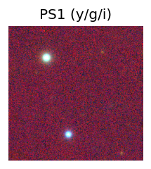
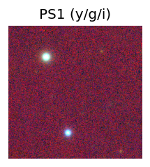
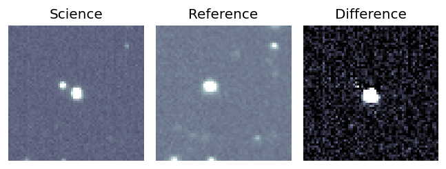
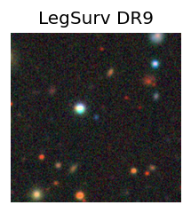
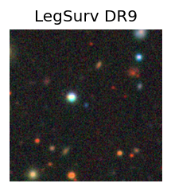

Candidate List 20251204Previous Day Next Day
Section 1: New Sources (age<1d) Section 2: Old (1-5d) sources observed last nightplaceholder
Section 1: New Afterglow/FBOT Cands Last Night (1)
1. ZTF25acfuueq (Afterglow?) [Back to Top] [Share] [Trigger Swift] [Fritz] [Lasair]RA, Dec: 326.85235, -1.54517 21h47m24.56s, -1d-32m-42.62sGalactic (l, b): 55.0713, -39.06701 ext(g-r) = 0.049 

TESS: Sectors [42 55 82 92]
PS1: 0 sources in 3 arcsec
LegacySurvey: 1 sources in 3 arcsec Closest: d = 6.35 arcsec, 262.7 deg (east of north) photoz=1.04 (68% bounds 0.88, 1.2), type=REX peak abs mag = -27.01 (68% bounds -26.58, -27.4)

Extinction-corrected gr color:
From alerts: 2.6 +/- 0.36 mag
Consistent with synchrotron, g-r>0!
Rise Rate:
g: 0.04 mag/day
r: 2.75 mag/day
i: -99 mag/day
Fade Rate:
g: -99 mag/day
r: -99 mag/day
i: -99 mag/day
Section 2: Older Sources Observed Last Night (2)
0. ZTF25acffprp (FBOT?) [Back to Top] [Share] [Trigger Swift] [Fritz] [Lasair]RA, Dec: 158.4288, 39.40399 10h33m42.91s, 39d24m14.37sGalactic (l, b): 180.8052, 58.94371 ext(g-r) = 0.013


TESS: Sectors [21 48]
SDSS (10 arcsec):Found SDSS phot-z: z=0.11; peak abs mag = -19.90
PS1: 0 sources in 3 arcsec
LegacySurvey: 1 sources in 3 arcsec Closest: d = 0.59 arcsec, 251.6 deg (east of north) photoz=0.09 (68% bounds 0.06, 0.13), type=SER peak abs mag = -19.31 (68% bounds -18.57, -20.3)

Extinction-corrected gr color:
From alerts: -0.22 +/- 0.05 mag
Rise Rate:
g: 0.32 mag/day
r: 0.3 mag/day
i: -99 mag/day
Fade Rate:
g: -99 mag/day
r: -99 mag/day
i: -99 mag/day
1. ZTF25acfjzha (Afterglow?) [Back to Top] [Share] [Trigger Swift] [Fritz] [Lasair]RA, Dec: 281.23289, 47.96032 18h44m55.89s, 47d57m37.17sGalactic (l, b): 77.19218, 20.82825 ext(g-r) = 0.058 

TESS: Sectors [ 14 26 40 41 53 54 55 74 75 80 81 82 118 120]
PS1: 0 sources in 3 arcsec
LegacySurvey: 1 sources in 3 arcsec Closest: d = 0.17 arcsec, 247.0 deg (east of north) photoz=0.02 (68% bounds 0.01, 0.17), type=PSF peak abs mag = -19.92 (68% bounds -18.5, -25.32)

Extinction-corrected gr color:
From alerts: -0.39 +/- 0.01 mag
Rise Rate:
g: 1.32 mag/day
r: -99 mag/day
i: -99 mag/day
Fade Rate:
g: 0.26 mag/day
r: 0.31 mag/day
i: -99 mag/day